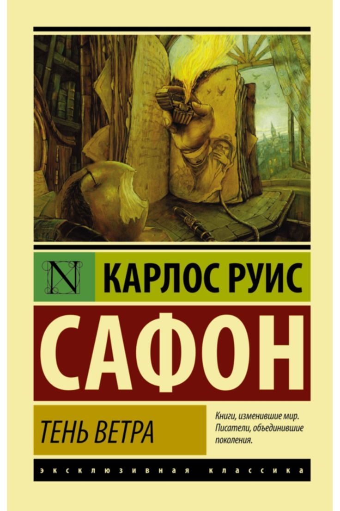

Тень ветра
Подробное содержание
Десятилетний Даниель Семпере, сын букиниста, просыпается однажды утром и не может вспомнить лица матери. Отец, желая утешить мальчика, ведёт его в таинственное место — «Кладбище забытых книг». Там Даниель должен выбрать одну книгу, которая станет его на всю жизнь. Ему попадается роман «Тень ветра» никому не известного автора Хулиана Каракса.
Даниель читает книгу за одну ночь и потрясён её красотой. Он пытается найти другие произведения Каракса, но выясняет, что некто, называющий себя Лаин Куберо, методично скупает и сжигает все экземпляры. Единственная уцелевшая книга — та, что у Даниеля. Так начинается опасное расследование, которое протянется через всю юность героя.
Даниель знакомится с загадочным бездомным Фермином, бывшим агентом, который помогает ему в поисках. Постепенно история Хулиана Каракса переплетается с судьбой самого Даниеля: любовь, предательство, старые особняки Барселоны, мрачные тайны богатых семей и призраки прошлого. Оказывается, что книга и её автор связаны с людьми, окружавшими Даниеля с детства. Финал раскрывает шокирующую правду о том, кто на самом деле уничтожал книги и почему.
История создания
Карлос Руис Сафон изначально писал сценарии, но мечтал о большом романе. «Тень ветра» родилась из его любви к Барселоне и готической литературе. Первый вариант рукописи был отклонён многими издательствами. Автор не сдавался, переписывал текст несколько лет, стремясь создать «роман внутри романа», где книга становится главным героем. В 2001 году роман наконец опубликовали, и он мгновенно стал бестселлером в Испании. Интересно, что прототипом «Кладбища забытых книг» послужила настоящая букинистическая лавка, которую Сафон часто посещал в детстве. Сегодня роман переведён на десятки языков и считается современной классикой.
← Вернуться к списку книг